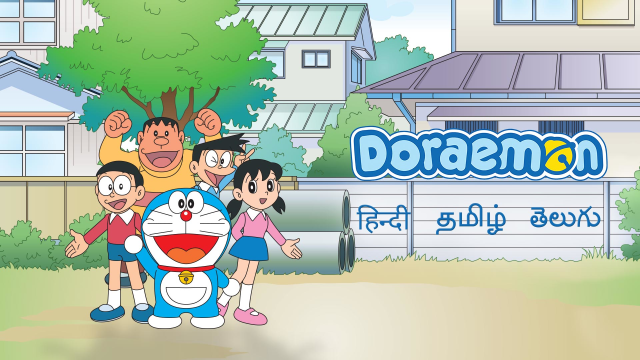
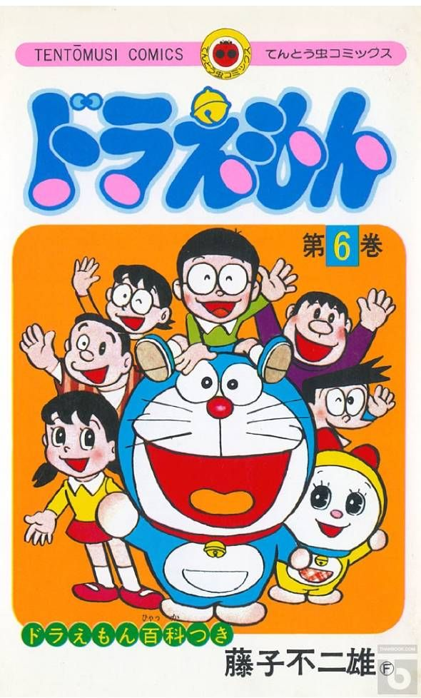
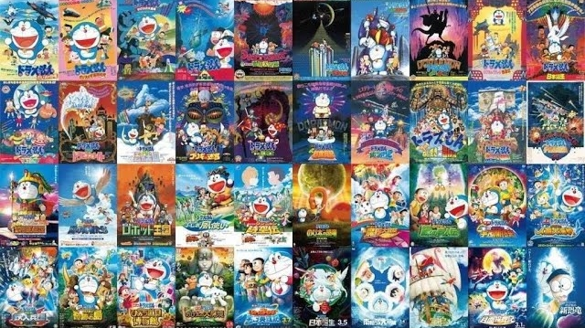
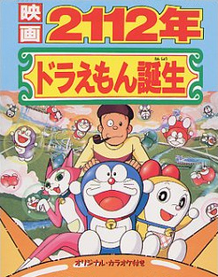
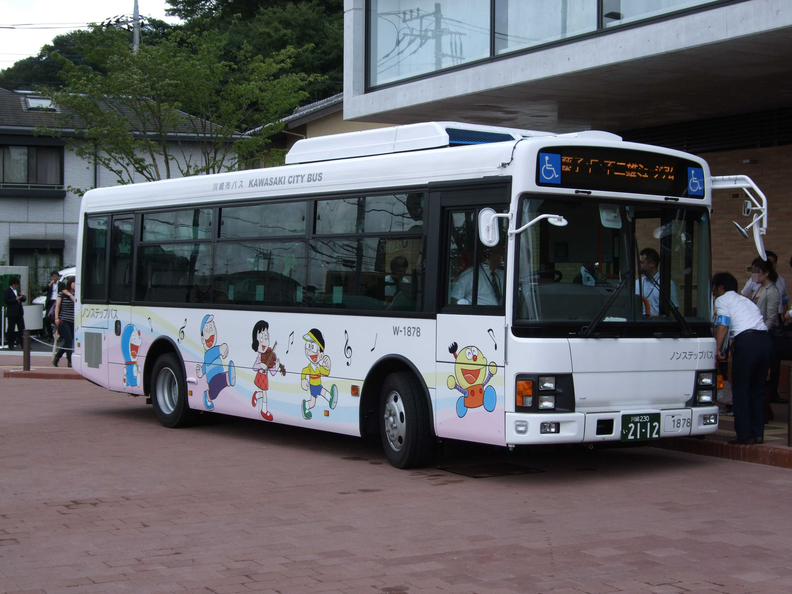
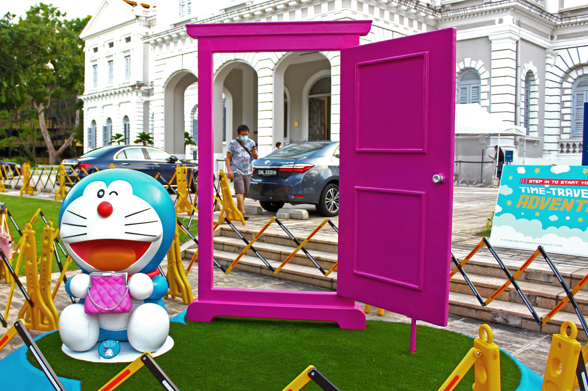

Doraemon (Japanese: ドラえもん [doɾaemoɴ]) is a Japanese manga series written and illustrated by Fujiko F. Fujio (the pen name of the duo Hiroshi Fujimoto and Motoo Abiko). The manga was first serialized in December 1969, with its 1,345 individual chapters compiled into 45 tankōbon volumes, published by Shogakukan from 1970 to 1996. The story revolves around an earless robotic cat named Doraemon, who travels back in time from the 22nd century to aid a boy named Nobita Nobi.

The manga spawned a media franchise. Three anime TV series have been adapted in 1973, 1979, and 2005. Additionally, Shin-Ei Animation has produced over forty animated films, including two 3D computer animated films, all of which are distributed by Toho. Various types of merchandise and media have been developed, including soundtrack albums, video games, and musicals. The manga series was licensed for an English language release in North America, via Amazon Kindle, by a collaboration of Fujiko F. Fujio Pro with Voyager Japan and AltJapan Co., Ltd. The anime series was licensed by Disney for an English-language release in North America in 2014, and LUK International in Europe, the Middle East and Africa.
Doraemon received critical acclaim and became a hit in many Asian countries. It won numerous awards, including the Japan Cartoonists Association Award in 1973 and 1994, the Shogakukan Manga Award for children's manga in 1982, and the Tezuka Osamu Cultural Prize in 1997. As of 2012, it has sold over 170 million copies worldwide, becoming one of the best-selling manga in history. Doraemon is also one of the highest-grossing media franchises of all time, of which the animated film series has the highest number of admissions in Japan. The Doraemon character has been viewed as a Japanese cultural icon, and was appointed as the first "anime ambassador" in 2008 by the country's Foreign Ministry.
Synopsis
Doraemon, a cat robot from the 22nd century, is sent to take care of Nobita Nobi by Sewashi Nobi, Nobita's future grandson, so that his descendants can get a better life. At the present, Nobita is a man who always fails in class, and whose company goes bankrupt, causing his family and sons to face financial difficulties.
Most stories of Doraemon revolve the young Nobita Nobi, who receives poor grades and is frequently bullied by his two classmates, Takeshi Goda (nicknamed "Gian") and Suneo Honekawa (Gian's sidekick). Doraemon has a four-dimensional pouch in which he stores unexpected gadgets he uses to aid Nobita. Doraemon's gadgets help Nobita overcome the troubles, and they end up developing a relationship with each other.
Nobita's closest friend and love interest is Shizuka Minamoto, who eventually becomes his wife in the future. Gian and Suneo often bully Nobita, but are also shown as Nobita's friends in certain episodes, and especially in the movies. A typical story consists of Nobita taking a gadget from Doraemon for his needs eventually making problems worse than they initially were.
Creation and conception
Doraemon is written and illustrated by Fujiko F. Fujio, whose real name is Hiroshi Fujimoto. According to Fujio, it was originally conceived following a series of three events: when searching for ideas for a new manga, he wished a machine existed that would come up with ideas for him, he tripped over his daughter's toy, and heard cats fighting in his neighborhood. To set up the plot and characters, he inspired some elements from his earlier manga series, Obake no Q-Tarō, which involve an obake living with humans, with a similar formula. Fujio said that the idea for Doraemon came after "an accumulation of trial and error, during which I finally found the pattern or style of manga to which I was most suited". Initially, the series achieved little success as gekiga was well-known at the time, and only became a hit after its adaptation into an anime TV series and multiple feature films.
Doraemon is mainly aimed at children, so Fujio chose to create the character with a simple graphic style, based on shapes such as circles and ellipses. In addition, blue, a characteristic color of Doraemon, was chosen as the main color in magazine publications, which used to have a yellow cover and red title. Set in Tokyo, the manga reflects parts of Japan's society, such as the class system and the "ideal" of Japanese childhood. Problems, if occur, are resolved in a way so as not to rely on violence and eroticism, and the stories were also integrated with the concept of environmentalism. During Doraemon's development, Fujio did not express a change in characters; he said, "When a manga hero become a success, the manga suddenly stops being interesting. So the hero has to be like the stripes on a barber pole; he seems to keep moving upward, but actually he stays in the same place."
Origin of the name
The name "Doraemon" can be translated roughly to "stray". Unusually, the name "Doraemon" (ドラえもん) is written in a mixture of two Japanese scripts: Katakana (ドラ) and Hiragana (えもん). "Dora" derives from "dora neko" (どら猫, stray cat), and is a corruption of nora (stray), while "-emon" (in kanji 右衛門) is an old-fashioned suffix for male names (for example, as in Ishikawa Goemon).[15] Nobita's home address in Tsukimidai ("moon-view-heights"), Nerima refers to Fujimidai ("Fuji-view-heights"), where Osamu Tezuka's residence and animation studio is based.
Concept of "time"
According to Zensho Ito, a former student of Fujio, the concept of "time" is one of the main reasons of the making of Doraemon. Frequently occur in its stories is the desire of Nobita to control time, and there exist many time-control gadgets that he uses to satisfy that desire, particularly the "Time Machine", which lies in his desk drawer. Unlike Western works on science fiction, the manga did not explain the theory nor the applied technology behind these tools, but instead focusing on how the characters exploit their advantages, making it more children-friendly.
Gadgets
Gadgets, or "himitsu dōgu" (ひみつ道具), are Doraemon's tools from the future, usually used to help the characters. Fujio said that Doraemon has a total of 1,293 gadgets; according to a 2004 analysis by Yasuyuki Yokoyama of Toyama University, there are 1,963 gadgets appeared in 1,344 sketches. The most important gadgets include "Take-Copter", a small piece of headgear that can allow its users to fly; "Time Machine", a machine used for time travel; "Anywhere Door", a pink-colored door that allows people to travel according to the thoughts of the person who turns the knob; "Time Kerchief", a handkerchief which can turn an object new or old or a person young or old; "Translator Tool", a cuboid jelly that allow one to converse in any language; and "Designer", a camera used to instantly dress-up the user.
Saya S. Shiraishi wrote that most of the gadgets were "an impressive testimony to the standards of quality control and innovation that exist in the twenty-second century". The gadgets were an essential part of the series so as to reflect a positive point of view about the association of technology in children, and to express the wishes of modern society.
Ending
The series stopped publishing after Fujimoto's death in 1996, without an ending; this has aroused numerous urban legends throughout the years. One of the most well-known "endings" of the manga was by an amateur manga cartoonist under the pen name "Yasue T. Tajima", first appeared on the Internet in 1998 and made up into a manga in 2005. The story takes place when Doraemon's battery dies, and Nobita later grows up becoming a robot engineer, potentially revive Doraemon and live a happy life. Tajima issued an apology in 2007, and the profits were shared with Shogakukan and the copyright owner, Fujiko F. Fujio Pro.
Ryūichi Yagi and Takashi Yamazaki, the directors of Stand by Me Doraemon, confirmed that it had only one opening, while the ending has been rewritten several times. Because of this, Shogakukan had to clarify that only if the marriage of Nobita and Shizuka is finalized will the mission be accomplished, and then Doraemon will return to the future.
Manga
In December 1969, the Doraemon manga appeared in six different children's monthly magazines published by Shogakukan. The magazines were aimed at children from nursery school to fourth grade. In 1973, two other magazines, aimed at fifth-grade and sixth-grade students, started publishing the manga. In 1977, CoroCoro Comic was launched as the flagship magazine of Doraemon.
Since the debut of Doraemon in 1969, the stories have been selectively collected into forty-five tankōbon volumes that were published under Shogakukan's Tentōmushi Comics imprint from July 31, 1974 to April 26, 1996 under the title Tentōmushi Comics (てんとう虫コミックス). These volumes are collected in the Takaoka Central Library in Toyama, Japan, where Fujio was born. Between April 25, 2005 and February 28, 2006, Shōgakukan published a series of five manga volumes under the title Doraemon+ (Doraemon Plus), which were not found in the forty-five original volumes; a sixth volume, the first volume in eight years, was published on December 1, 2014. In addition, 119 unpublished stories were compiled into six colored-manga volumes under the title Doraemon Kara Sakuhin-shu (ドラえもん カラー作品集), published from July 17, 1999 to September 2, 2006. Between July 24, 2009 and September 25, 2012, Shogakukan published a master works collection consisting of twenty volumes with all 1,345 stories written by Fujio. In December 2019, the 50th anniversary of Doraemon, a "Volume 0" was published by Shogakukan with six different versions of Doraemon's first appearance.

There have been two series of bilingual, Japanese and English, volumes of the manga by SHOGAKUKAN ENGLISH COMICS under the title Doraemon: Gadget Cat from the Future, and two audio versions. The first series has ten volumes and the second one has six. In addition, 21st Century Publishing House released bilingual English-Chinese versions in Mainland China, and Chingwin Publishing Group released bilingual English-Chinese versions in Taiwan.
In July 2013, Fujiko F. Fujio Pro announced that they would be collaborating with ebook publisher Voyager Japan and localization company AltJapan Co., Ltd. to release an English-language version of the manga in full color digitally via the Amazon Kindle platform in North America. Shogakukan released the first volume in November 2013. This English version incorporates a variety of changes to character names; Nobita is "Noby", Shizuka is "Sue", Suneo is "Sneech", and Gian is "Big G", while dorayaki is "Yummy Bun/Fudgy Pudgy Pie". In addition, as of 2016, four volumes of the manga have been published in English in print by Shogakukan Asia.
Shogakukan started digital distribution of all forty-five original volumes throughout Japan from July 16, 2015.
Anime
The first attempt of a Doraemon animated series was in 1973, by Nippon Television. After a January 1973 pilot named Doraemon Mirai Kara Yattekuru (ドラえもんが未来からやってくる), twenty-six episodes, each with two segments, were broadcast on Nippon TV from April 1 to September 30 of the same year. The series was directed by Mitsuo Kaminashi with voice cast from Aoni Production; the character Doraemon was voiced by Kōsei Tomita, then later by Masako Nozawa. Later in the series, the animation studio, Nippon TeleMovie Productions, went bankrupt, and the masters were sold off or destroyed. The series was re-aired on Nippon TV and several local stations until 1979, when Shogakukan requested Toyama Television to cease broadcasting. Some of the segments were found in the archives of IMAGICA in 1995, and some others were recovered by Jun Masami in 2003. As of 2013, 21 of 52 segments have known to survive, two of which without sound.
Doraemon remained fairly exclusive in manga form until 1979 when a newly formed animation studio, Shin-Ei Animation (now owned by TV Asahi) produced an animated second attempt of Doraemon. The series, directed by Tsutomu Shibayama, aired on TV Asahi from April 2, 1979 to March 18, 2005. Eiichi Nakamura served as director of photograph and character designer, while Shunsuke Kikuchi was the composer. Nobuyo Ōyama voiced Doraemon in the series; because of this, in Asia, this version is sometimes referred to as the Ōyama Edition. In total, 1,787 episodes were produced and were released in VHS and DVD by Toho. Celebrating the anniversary of the franchise, a third Doraemon animated series, also produced by Shin-Ei Animation, began airing on TV Asahi on April 15, 2005, with new voice actors and staff, and updated character designs. The third series is sometimes referred to in Asia as the Mizuta Edition, as a tribute for the voice actress for Doraemon, Wasabi Mizuta. It was released in DVD on February 10, 2006 under the title New TV-ban Doraemon (NEW TV 版 ドラえもん) with Shogakukan Video seal.
On May 12, 2014, TV Asahi Corporation announced an agreement with The Walt Disney Company to bring the 2005 series to the Disney XD television channel in the United States beginning in the summer of that year. Besides using the name changes that were used in AltJapan's English adaptation of the original manga, other changes and edits have also been made to make the show more relatable to an American audience, such as Japanese text being replaced with English text on certain objects like signs and graded papers, items such as yen notes being replaced by US dollar bills, and the setting being changed from Japan to the United States. Initial response to the edited dub was positive. The Disney adaptation began broadcast in Japan on Disney Channel from February 1, 2016. The broadcast offered the choice of the English voice track or a newly recorded Japanese track by the Japanese cast of the 2005 series.
In addition, the anime has been aired in over sixty countries worldwide. It premiered in Thailand in 1982, the Philippines in 1999, India in 2005, and Vietnam in 2010. Other Asian countries that broadcast the series include China, Hong Kong, Singapore, Taiwan, Malaysia, Indonesia, and South Korea. The series is licensed in EMEA regions by LUK International; it premiered in Spain in 1993 and France in 2003. It has also been distributed in South American countries, including Brazil, Colombia, and Chile. In 2017, POPS Worldwide, a Vietnamese multimedia company, collaborated with TV Asahi to release the anime series on YouTube and other digital platforms.
Feature films
As of 2020, there are forty annual feature-length animated films produced by Shin-Ei Animation and released by Toho, the most recent of which is Doraemon: Nobita's New Dinosaur, which premiered in Japan on August 7, 2020. The first twenty-five films are based on the 1979 anime, while the rest are based on the 2005 anime. Unlike the anime and manga series, they are more action-adventure oriented and have more of a shōnen demographic, taking the familiar characters of Doraemon and placing them in a variety of exotic and perilous settings.

On August 8, 2014, Stand by Me Doraemon was released in Japan. A 3D computer animated film directed by Takashi Yamazaki and Ryūichi Yagi, it combines elements from the short stories of the manga series: "All the Way from the Country of the Future", "Imprinting Egg", "Goodbye, Shizuka-chan", "Romance in Snowy Mountain", "Nobita's the Night Before a Wedding", and "Goodbye, Doraemon..." into a new complete story, from the first time Doraemon came to Nobita's house to Doraemon bidding farewell to Nobita. The film was a box office success, grossing $183.4 million worldwide. A sequel, Stand by Me Doraemon 2, also directed by Yamazaki and Yagi, was released on November 20, 2020.
Short films, OVA and crossover
Several Doraemon short films were produced and released between 1989 and 2004. These include 2112: The Birth of Doraemon, a film about the life of Doraemon from birth before coming to Nobita; Doraemon: Nobita's the Night Before a Wedding, a film about the events related to the marriage of Nobita and Shizuka; The Day When I Was Born and Doraemon: A Grandmother's Recollections, the films about the relationship between Nobita and his parents along with his grandmother. Other short films focus on Dorami and the Doraemons. In 1981, Toho released What Am I for Momotaro, a film about Momotarō, the hero of Japanese folklore.
In 1994, an educational OVA was made, titled Doraemon: Nobita to Mirai Note (ドラえもん のび太と未来ノート), where the main characters express the hope for a better Earth. The OVA was released in DVD along with the 13th issue of Fujiko F. Fujio Wonderland magazine in September 2004. A crossover episode of Doraemon with AIBOU: Tokyo Detective Duo aired on TV Asahi on November 9, 2018.

Cultural impact and legacy
The Doraemon manga has inspired many other mangakas, including Eiichiro Oda, the creator of One Piece with the idea of "Devil Fruits", and Rumiko Takahashi, creator of Urusei Yatsura and Ranma ½. The manga has also been mentioned several times in Gin Tama and Great Teacher Onizuka. The character Doraemon is considered one of the cultural icons in Japan, and one of the most well-known character in manga history; some critics compared his notability with Mickey Mouse and Snoopy. A 2007 poll by Oricon shown that Doraemon was the second-strongest manga character ever, behind only Son Goku of Dragon Ball. Doraemon is also referred as something with the ability to satisfy all wishes. He appeared in the 2016 Summer Olympics closing ceremony to promote the 2020 Summer Olympics in Tokyo.

On April 22, 2002, on the special issue of Asian Hero in Time magazine, Doraemon was selected as one of the 22 Asian Heroes. Being the only anime character selected, Doraemon was described as "The Cuddliest Hero in Asia". In 2008, the Japanese Ministry of Foreign Affairs appointed Doraemon as the first anime cultural ambassador; a Ministry spokesperson explained the decision as an attempt to help people in other countries understand Japanese anime better and to deepen their interest in Japanese culture. On September 3, 2012, Doraemon was granted official residence in the city of Kawasaki, Kanagawa, one hundred years before he was born. In the same year, Hong Kong celebrated the birthday of Doraemon 100 years early with a series of displays of the character.
A Fujiko F. Fujio museum opened in Kawasaki on September 3, 2011, featuring Doraemon as the star of the museum. The National Museum of Singapore held a time-travelling exhibition in October 2020 as a tribute to the manga. TV Asahi launched the Doraemon Fund charity fund to raise money for natural disasters in 2004, and in 2011. After the 2011 Tōhoku earthquake and tsunami, Shogakukan released an earthquake survival guidebook, which included the main cast of the Doraemon manga series. In late 2011, Shogakukan and Toyota Motor Corporation joined forces to create a series of live-action commercials as part of Toyota's ReBorn ad campaign, which depicted the manga's characters two decades after being grown up, where Hollywood actor Jean Reno played Doraemon. ESP Guitars, a Japanese guitar manufacturer, has made several Doraemon shaped guitars. In 2020, Mumbai's Sion Friends Circle group distributed food and books to kids using mascots, one being Doraemon, to help during the COVID-19 pandemic. In Vietnam, a Doraemon scholarship fund was established in 1996, and the Doraemon character has been used for education of traffic safety.

One of the oldest, continuously running icons, Doraemon is a recognizable character in this contemporary generation. Nobita, the show's protagonist, is a break from other characters typically portrayed as special or extraordinary, and this portrayal has been seen as reasons of its appeal as well as the contrary, especially in the United States. Mexican filmmaker Guillermo del Toro stated in an interview that he considers Doraemon to be "the greatest kids series ever created".
Many prominent figures have been nicknamed after the cast of Doraemon: politician Osamu Fujimura is known as the "Doraemon of Nagatacho" due to his figure and warm personality, and sumo wrestler Takamisugi was nicknamed "Doraemon" because of his resemblance to the character. In 2015, a group of people in a drought-affected northern-Thailand village used a Doraemon toy to complete a rain-ritual to reduce controversies that would occur by using real animals.